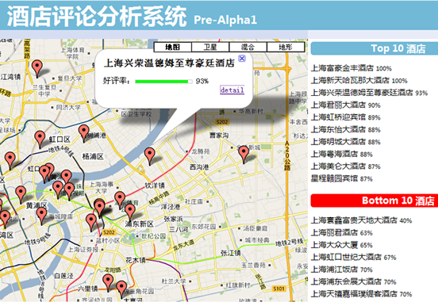
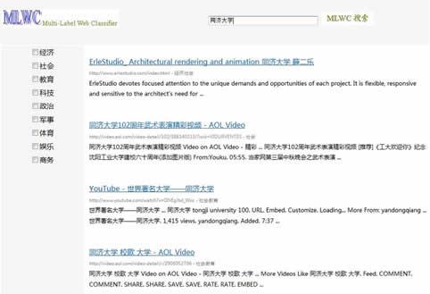
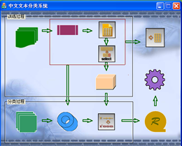

Selected Publications (Full List)
- [1] Z.F. Zhang, D.Q. Miao, Z.H. Wei and L. Wang, "Document-level Sentiment Classification Based on Behavior-Knowledge Space Method", in Proceedings of the 8th International Conference on Advanced Data Mining and Applications (ADMA'12), Nanjing, China, Dec. 15-18, 2012, LNAI 7713, pp. 330-339.
- [2] D.Q. Miao, Z.F. Zhang, Z.H. Wei and C.Y. Wang, "DW-ML-kNN: A Dual Weighted Multi-label kNN Algorithm", in Proceedings of the 8th Conference on Natural Language Processing and Knowledge Engineering (NLP-KE'12), Hefei, China, Sep. 20-24, 2012, pp. 519-529.
- [3] Z.F. Zhang, D.Q. Miao and C. Gao, "Short Text Classification Using Latent Dirichlet Allocation", Journal of Computer Applications, 2013. (in Chinese)
- [3] Z.F. Zhang and D.Q. Miao, "Feature Selection for Text Categorization Based on Rough Set", CAAI Transactions on Intelligent Systems, 2009, 4(5): 453-457. (in Chinese)
- [4] Z.H. Wei, H.Y. Zhang, Z.F. Zhang, W. Li and D.Q. Miao, "A Naive Bayesian Multi-label Classification Algorithm with Application to Visualize Text Search Results", International Journal of Advanced Intelligence, 2011, 3(2): 173-188.
- [5] Y.F. Chen, D.Q. Miao, W. Li and Z.F. Zhang, "Semantic Orientation Computing Based on Concepts", CAAI Transactions on Intelligent Systems, 2011, 6(6): 489-494. (in Chinese)
- [6] D.Q. Miao, C. Gao, N. Zhang and Z.F. Zhang, "Diverse Reduct Subspaces Based Co-Training for Partially Labeled Data", International Journal of Approximate Reasoning, 2011, 52(8): 1103-1117.
Research Experiences
05/2012-present Multi-granularity Topic-Sentiment Mixture Model on Social Media Texts I host this project supported by the Fundamental Research Funds for the Central Universities. Social media texts contain colorful opinions and cover many topics. An object can be represented by hierarchical attributes. The project aims to discover rich sentiment information about one object within the social media. Due to the short length of social media texts, we apply latent Dirichlet allocation in topic extraction and similarity measure. More work are ongoing.
06/2012-08/2012 NLP&CC 2012 Weibo Sentiment Analysis Evaluation We accomplish a sentiment analysis system with 70.4% precision, 56.2% recall and 62.5% F1 in opinion detection task; 69.1% precision, 38.9% recall and 49.8% F1 in polarity classification task. We fuse many public sentiment dictionarities, one of which is collected by myself. We adopt lexicion-based methods for subjectivity identification. We use three elements, i.e., opinion words, negative words and punctuation marks, for sentiment classification.
12/2010-06/2011 Opinion Mining for Hotel Reviews We implement a crawler to fetch user reviews about hotels from ctrip.com and construct a hotel review dataset. We measure semantic orientation based on reference concepts using HowNet, which outperforms the word-based method. We establish several supervised and unsupervised algorithms for sentiment classificaiton. We propose an ensemble method based on behavior-knowledge-space and achieve good results. Besides, we develop a visualization system that illustrates opinions of 56 hotels in Shanghai with the help of Google Map. These work are described in [1], [5].
11/2009-07/2010 Multi-label Classification for Web Search Results We build a visualization system for web search results based on multi-label classification. For lack of Chinese multi-label corpora, we construct one from SogouC corpus manually. We propose a Multi-Label Naive Bayesian (MLNB) classification algorithm and implement a prototype system named TJ-MLWC. The system acts as an intermediate layer between users and an Internet search engine, which allows the search results of a query displaying by one or more categories. We conduct further research on multi-label learning and propose a Dual-Weighted Multi-Label KNN (DW-ML-KNN) algorithm. The algorithm achieves a satisfying performance especially when dealing unbalanced data. These work are described in [2], [4].
03/2008-09/2008 Chinese Text Classification System We build a system for Chinese text classification. The system includes five functional modules: preprocessing (including word segmentation implemented by ICTCLAS), feature selection, text representation using VSM, classifiers (KNN, SVM implemented by LibSVM) and performance evaluation. We focus on feature selection algorithms and propose a new feature selection algorithm based on rough set theory, named IQR (Improved Quick Reduction). IQR achieves better performance than CHI. This work is described in [3]. [EXE] [DEMO]
Small Tools
- GibbsLDA A GUI tool for GibbsLDA++, a C/C++ implementation of latent Dirichlet allocation(LDA) using gibbs sampling technique for parameter estimation and inference.
- WordSplit A GUI tool for Chinese word segmentation and part-of-speech tagging, which calls the interfaces supported by ICTCLAS (Packet: ICTCLAS_OpenSrc_C_windows).